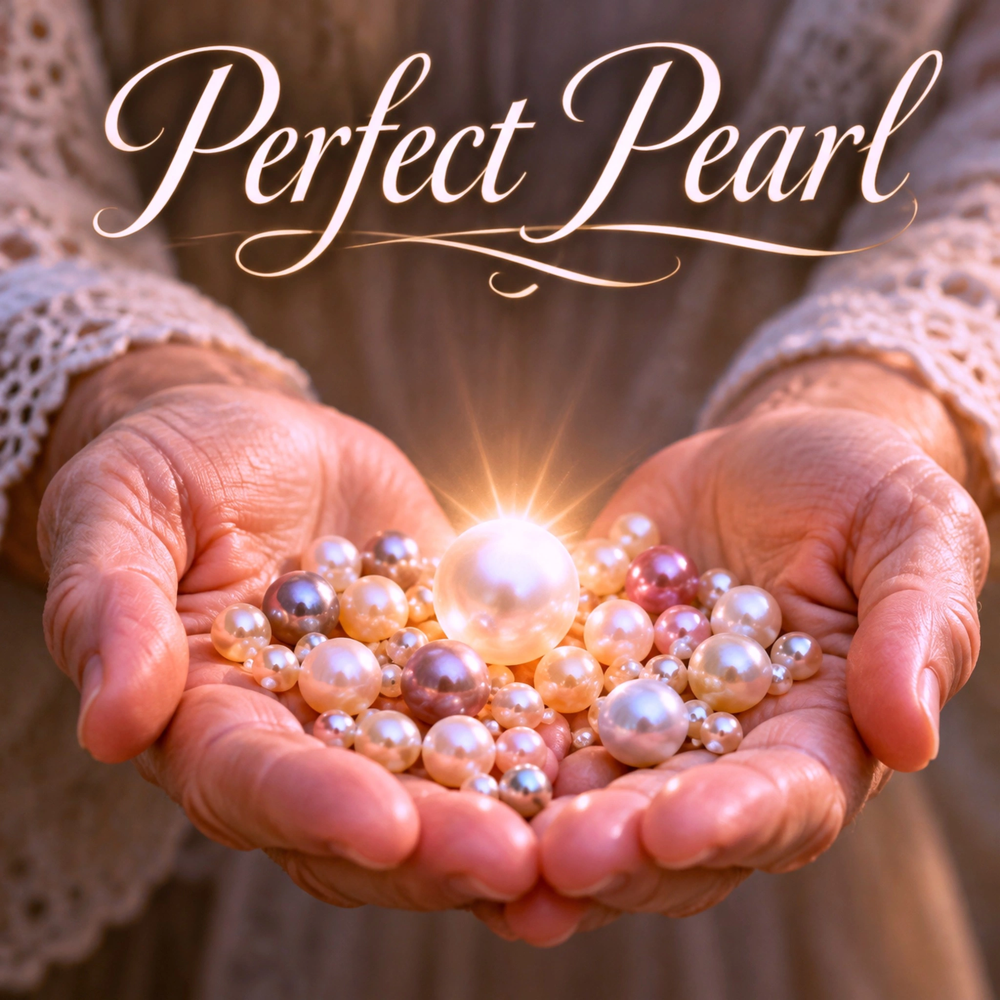

Perfect Pearl

Want to download this song? Return to the Songs page, add this song to your playlist, then open My Playlist. Select the song and choose Download Song to review the Free Use agreement.
Lyrics
Verse 1
She longed for one when she was young
Something to keep to help her feel good
An object so precious, to which she clung
Imaginings she never understood.
Verse 2
When she cried, her Teacher drew her near,
And gently wiped away her tear
Another girl said, “I'm so glad you're here.”
And hugged her and chased away her fear.
Chorus
She put those pearls on her imagined strand,
She loved each one more than she planned.
Each one a treasure, a hope to embrace,
She'd found some things she couldn't replace.
Verse 3
Principal said, “There's something special in you.”
She treasured those words, believing them true.
Yet beyond what those words could impart,
A Greater Pearl waited to capture her heart.
Chorus
She kept those pearls on her imagined strand,
She loved each one more than she planned.
Each one a treasure, a hope to embrace,
She'd found the things she couldn't replace.
Bridge
The little girl grew, but her longing remained,
Till she heard of a Savior who knew her by name.
She poured out her heart in a whispered prayer,
And found in His mercy, Love waiting there.
He gave His own life on Calvary's tree,
To pay for her sins and to set her free.
His sacrifice revealed Love's greatest price,
Jesus, her Savior, the Pearl of Great Price.
Chorus
She kept those pearls on her imagined strand,
She loved each one more than she planned.
Some a treasure, some a hope to embrace,
She'd found the things she couldn't replace.
Final Chorus
No longer just pearls on an imagined strand,
She rests in the grace of her Savior's plan.
The Pearl of Great Price, beyond all compare,
A love she can treasure... and freely share.
Devotional
Perfect Pearl — A Love Beyond Compare
A little girl longed for something precious to keep. She began gathering moments of kindness on an imagined strand: a teacher drawing her close and wiping away a tear, another child welcoming her with a hug, a principal speaking words of affirmation. Each became a pearl she could treasure when she needed to remember that she mattered.
Scripture reminds us of the beauty of well-timed words: “A word fitly spoken is like apples of gold in pictures of silver.” (Proverbs 25:11, KJV) And it calls us to speak in ways that minister grace to those who hear (Ephesians 4:29). The kindness of another person may stay with us long after the moment has passed.
As the little girl grows, her longing remains. The treasures on her imagined strand have been meaningful, but she comes to know a greater love: the Savior who knows her by name. Jesus says, “I am the good shepherd, and know my sheep, and am known of mine.” (John 10:14, KJV) The song moves from receiving encouragement to receiving the mercy and grace of Christ.
At the heart of the song is Calvary. “The Son of God, who loved me, and gave himself for me” (Galatians 2:20, KJV) expresses the personal wonder of His sacrifice. And Ephesians 2:8 tells us that salvation is by grace through faith, the gift of God. His love is greater than anything the little girl could gather or earn.
Jesus speaks in Matthew 13:45–46 of a merchant who finds one pearl of great price and sells all he has to buy it. The parable speaks of the kingdom of heaven and its surpassing worth. In Perfect Pearl, the image also becomes a poetic expression of the incomparable worth of Jesus, the Savior through whom that grace is received.
The final chorus changes the picture. The girl is no longer simply holding an imagined strand. She rests in the grace of her Savior's plan. And the love she has found is something she can freely share. “We love him, because he first loved us.” (1 John 4:19, KJV) His love reaches us, transforms us, and gives us something precious to offer others.
Prayer
Father, thank You for the kindness You have allowed me to receive, and for the people whose words and actions have brought comfort. Above every earthly treasure, thank You for Jesus Christ, who gave His life for me. Help me rest in Your grace, remember the worth of His sacrifice, and share His love with others. In Jesus' name, Amen.